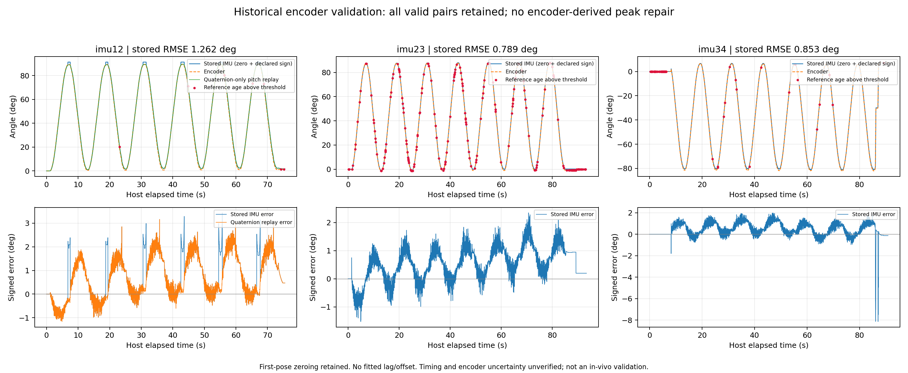

Nâng cấp độ chính xác IMU
16/10/2026 · ứng dụng 2.0.0 · BNO055 · firmware nRF52840
Đã hoàn tất nâng cấp phần mềm, build và kiểm chứng. Báo cáo phân biệt test phần mềm, phân tích encoder cũ và độ chính xác đo thực tế. Chưa có phép đo mới sau khi nạp firmware; chưa chứng minh RMSE <1° cho mọi góc khớp khi đeo trên người.
Thay đổi chính
- Tính quaternion tương đối sau hiệu chuẩn sensor → segment; xuất chín thành phần có dấu theo ZXY. Bỏ trừ Euler, lấy trị tuyệt đối, deadband và giới hạn góc tùy ý.
- Hiệu chuẩn tư thế trung tính bằng trung bình quaternion và trục chức năng riêng cho hông, gối, cổ chân. Kiểm tra chuyển động, thiếu dữ liệu và chất lượng trục; giữ trục nghiêng để giảm góc chéo.
- Firmware gửi ánh xạ clock node → hub, drift, boot ID và thời gian đọc I2C. Ứng dụng nội suy quaternion cùng thời điểm; không ngoại suy hoặc ghép dữ liệu qua reboot; loại mẫu cũ và truyền lại.
- Lưu CSV góc thô, quaternion gốc, metadata và lịch sử hiệu chuẩn trong session ZIP. Sửa lỗi stop, xuất nhầm phiên, reset max, giá trị không hữu hạn, WebChannel và tích lũy trạng thái filter.
- Phân tích chu kỳ từ IC/TO đã xác nhận: stance/swing, ROM và đường cong trung bình/SD. Không giả định sự kiện tiếp xúc chỉ từ góc khớp.
- Mỗi mẫu cập nhật trực tiếp thay vì quét toàn bộ lịch sử. GUI nhận batch; CSV giữ toàn bộ mẫu hợp lệ.
Kiểm chứng dữ liệu encoder đã cung cấp
Nguồn: C:\Users\doman\OneDrive\Desktop\import 2\imu_enc. Dữ liệu gốc không bị sửa. Cột đo đã zero theo tư thế đầu; quy ước dấu lần lượt −1, −1, +1. Không bù độ trễ, không fit offset theo encoder, không làm mượt hoặc bỏ đỉnh để giảm RMSE. Bảng chính giữ mọi cặp hữu hạn có Encoder_Valid=1, kể cả reference cũ.
Replay quaternion là tính lại scalar pitch ZYX của phép thử cũ. Nó chưa kiểm chứng hệ tọa độ giải phẫu, phép đo đủ 3D hoặc pipeline đồng bộ mới.

- Cặp 1–2 có 287 mẫu pitch bị ép về −90°. Quaternion trong CSV tương ứng khoảng −88,416° đến −87,451°. Mã thu cũ dùng
abs(sinp) >= 0.999; việc ép bắt đầu ở khoảng 87,44°. Tính lại từ quaternion khôi phục thông tin mà không dùng encoder.
- Cặp 2–3 và 3–4 có reference cũ tới 1,676 và 1,779 giây nhưng vẫn đánh dấu hợp lệ. JSON báo riêng độ nhạy khi giới hạn tuổi reference 20 ms; kết quả này không thay thế điểm số toàn bộ.
- RMSE che được lỗi tức thời: cặp 3–4 có mẫu sai hơn 8°. Chưa xác định được nguồn lỗi chỉ từ file cũ.
- Script cũ
plot_imu_encoder_accuracy.py mặc định cho phép dùng encoder để tái tạo đỉnh IMU rồi ghi RMSE đã sửa lên hình. Cần tắt chức năng này khi chứng minh độ chính xác. Hình mới giữ nguyên tín hiệu. Lệnh và cửa sổ dùng tạo SVG cũ chưa được xác nhận.
- Hai file pair gốc 2–3 và 3–4 chỉ có header; phân tích dùng file
_reconstructed. JSON lưu SHA-256, nguồn và số mẫu.
Số liệu đầy đủ · Biểu đồ SVG · CSV 1–2 · CSV 2–3 · CSV 3–4
Test và build
Đã kiểm tra bộ test gốc trước khi sửa: 15 test ứng dụng, 74 test firmware. Bản hiện tại: 69 test ứng dụng và 77 test firmware đều qua, không skip. Test bổ sung gồm ma trận độc lập, mount ngẫu nhiên, chuyển động toàn khối, trục nghiêng, quaternion đổi dấu, near-90°, clock drift/wrap, CRC, thiếu node, reboot, replay bốn node, hiệu chuẩn, phiên ghi, gait và báo cáo encoder.
Qt/WebChannel smoke chạy thao tác hiệu chuẩn, đo và xuất dữ liệu. Môi trường headless không tạo được WebGL; nhánh báo lỗi 3D đã được kiểm tra. Render 3D trên GPU thực tế và truyền radio trên board chưa được kiểm chứng trong lần chạy này.
Callback khoảng 0,05 ms/mẫu ở 100.000 dòng lịch sử. Đây là tốc độ xử lý phần mềm, không phải sai số vật lý.
Log kiểm chứng · Ảnh smoke UI · Benchmark · Thay đổi và sao lưu · EXE và checksum
Dùng bản mới
- Cài IMUJointViewer-Setup.exe, hoặc chạy EXE portable cùng thư mục đi kèm.
- Nạp bộ UF2 cho hub và bốn node, đúng ID 1–4. Đã build, chưa tự động nạp board. Pin/I2C dựa trên cấu hình phần cứng hiện có. Firmware cũ thiếu clock mapping chỉ được ghi raw, không tạo góc giả đồng bộ.
- Chọn binary, kết nối; giữ tư thế chuẩn tối thiểu hai giây rồi hiệu chuẩn chức năng từng khớp. Lưu profile và xuất CSV kèm session ZIP.
- Đo lại encoder: nhiều tốc độ, chuyển động cả cụm, các trục, tháo/lắp lại và thời gian dài. Dùng phép hiệu chuẩn riêng, giữ nguyên tham số cho tập đánh giá độc lập. Sau đó kiểm chứng cảm biến đeo với reference phù hợp.
Hướng dẫn và công thức
Giới hạn còn lại
Clock mapping quy đổi thời điểm đọc I2C, chưa đo được thời điểm fusion nội bộ BNO055. Nó không loại bỏ hoàn toàn latency/jitter bên trong cảm biến. Một encoder chỉ xác nhận một bậc tự do trong phép thử đó; độ chuẩn encoder, cơ cấu gá và độ không chắc chắn thời gian chưa được định lượng. Sai lệch trục giải phẫu, chuyển động mô mềm, trượt dây đeo và từ trường vẫn cần kiểm chứng trên hệ thật. Bản nâng cấp loại bỏ các lỗi phần mềm đã xác định; chưa đủ bằng chứng cam kết dưới 1° cho mọi góc khi đi bộ.